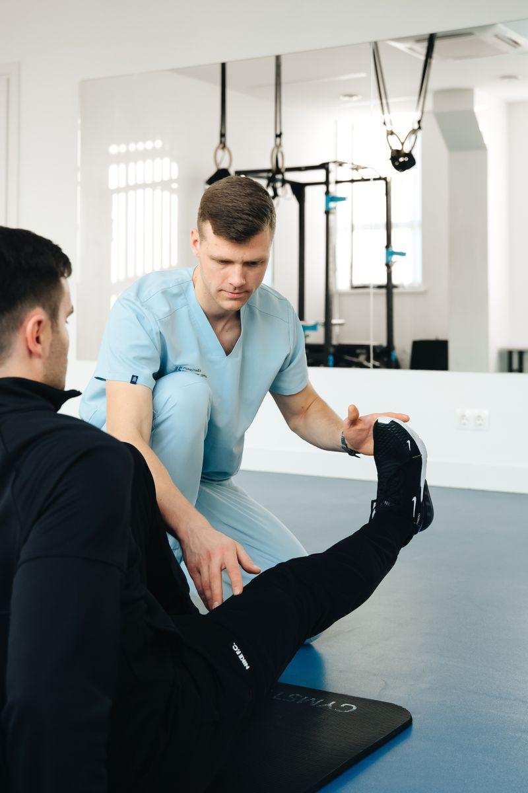
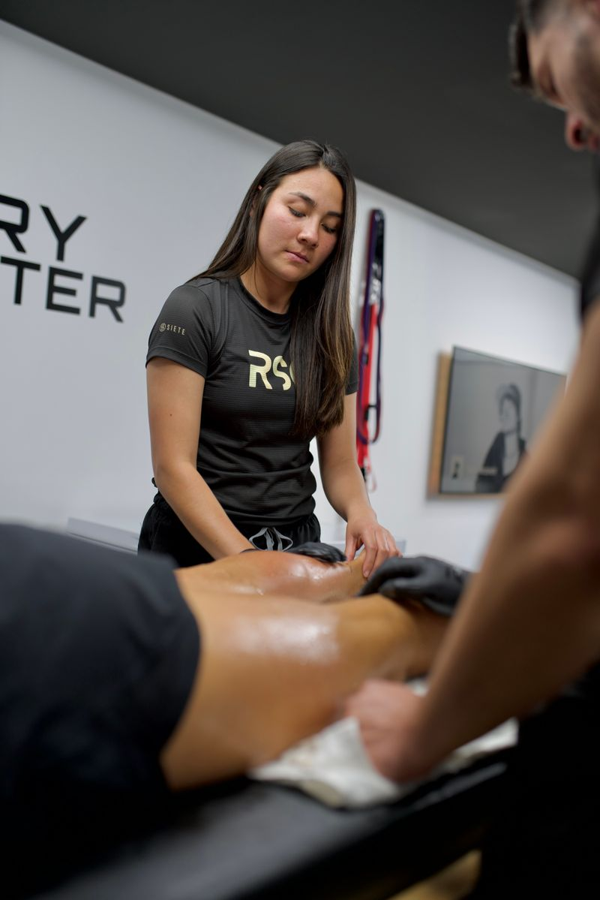
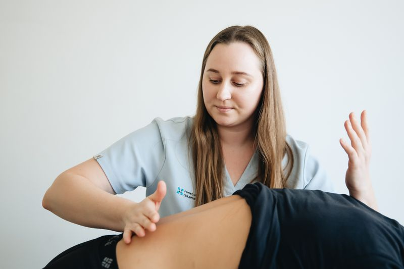
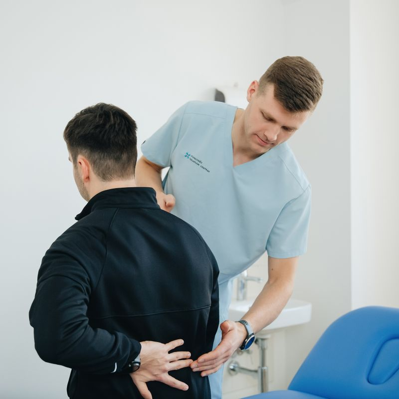
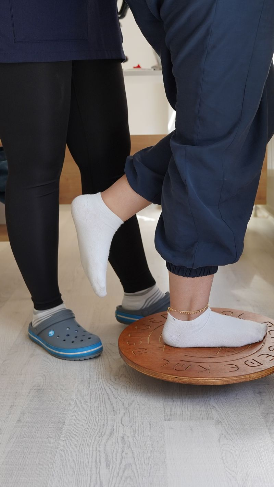
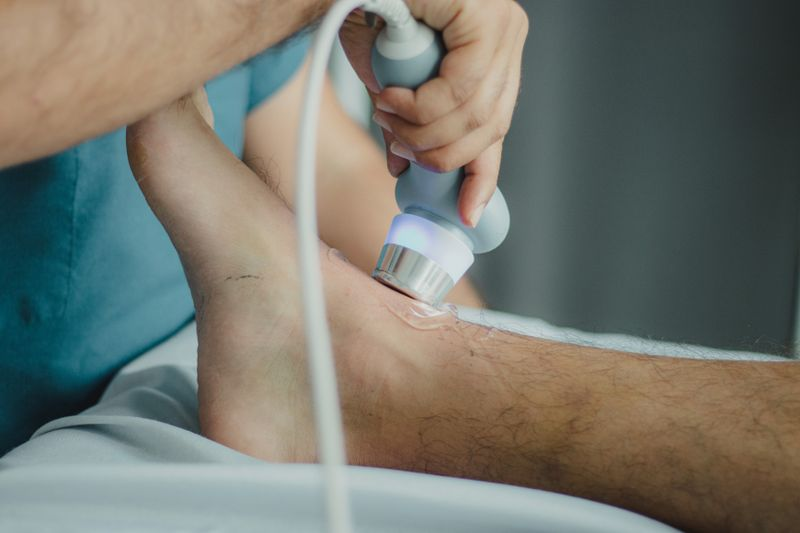
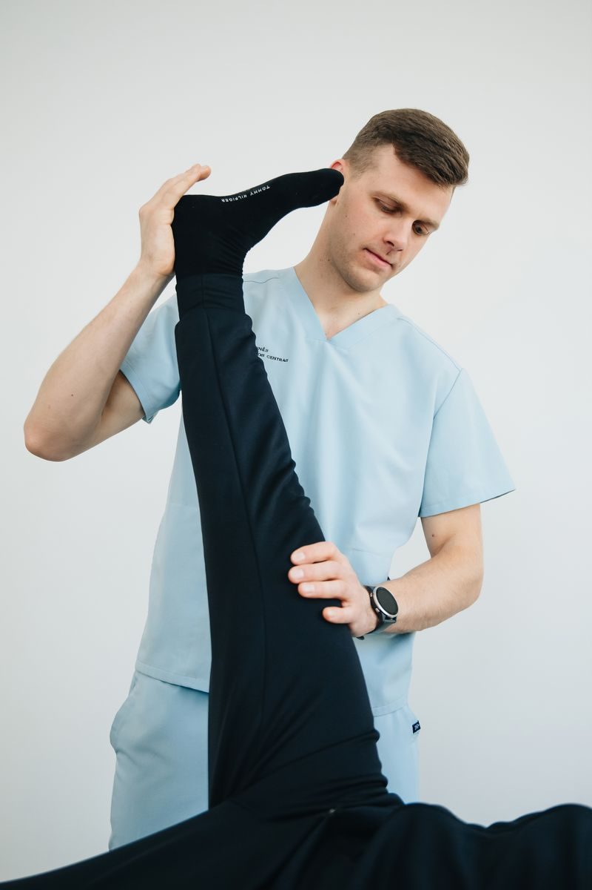
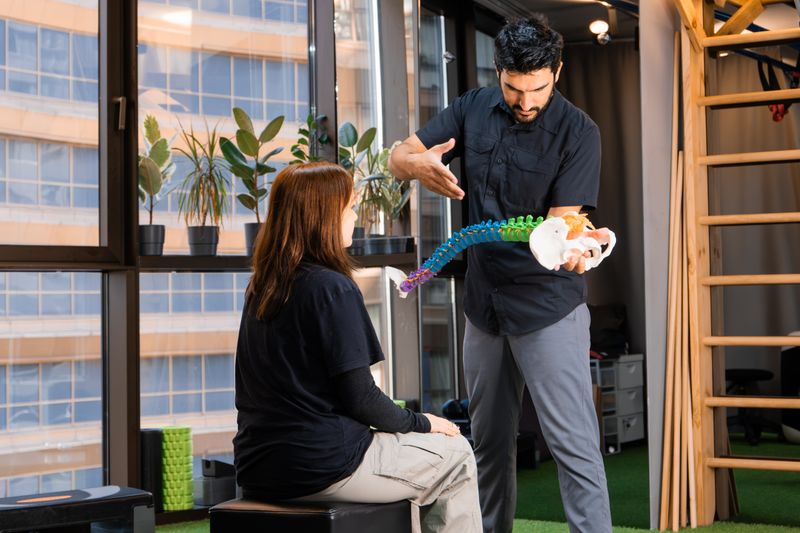

Rehabilitación postoperatoria
Acompañamiento completo tras cirugías de rodilla, hombro, cadera y columna, para que recuperes fuerza y movilidad con seguridad.
Fisioterapia · Rehabilitación · Bienestar
En Fisioterapia VitalCare tratamos cada dolor, cada lesión y cada recuperación con un plan a tu medida. Terapia manual, rehabilitación deportiva y un equipo que camina contigo hasta que vuelvas a moverte sin dolor.
Nuestros servicios
Cada programa empieza con una evaluación completa y se diseña alrededor de tu dolor, tu actividad y tus metas.

Acompañamiento completo tras cirugías de rodilla, hombro, cadera y columna, para que recuperes fuerza y movilidad con seguridad.

Tratamiento de lesiones de entrenamiento y deporte, con readaptación funcional para volver a tu nivel competitivo más fuerte.

Técnicas de movilización, liberación miofascial y masaje terapéutico para aliviar tensión, mejorar circulación y relajar el cuerpo.

Protocolos efectivos para cervicalgia, lumbalgia y hernias discales, atacando la causa del dolor y no solo el síntoma.

Estimulación del control motor, equilibrio y coordinación en pacientes con ACV, Parkinson o lesiones neurológicas.

Agentes físicos de última generación que aceleran la reparación de tejidos y potencian el efecto de la terapia manual.

Tu terapeuta
Licenciado en Fisioterapia por la UASD, con formación avanzada en terapia manual ortopédica y rehabilitación deportiva. Su filosofía es simple: entender tu historia, escuchar tu cuerpo y construir contigo un plan que funcione en tu vida real.
¿Por qué elegirnos?
Primera sesión de 60 minutos para diagnosticar la causa real de tu dolor y conocer tu historia completa.
Objetivos, tiempos y ejercicios definidos desde el día uno. Sabes qué trabajamos, por qué y para qué.
Entre sesiones no estás solo: ajustamos tu plan por WhatsApp y medimos avances en cada visita.

Testimonios
“Llegué con un dolor lumbar que no me dejaba dormir. En tres semanas noté una diferencia enorme. Profesionales, puntuales y con un trato humano increíble.”
“Me atendieron después de mi cirugía de rodilla. El plan de recuperación fue claro desde el primer día y hoy volví a correr. Se nota la experiencia del equipo.”
“Excelente seguimiento y mucha paciencia. Mi mamá recuperó movilidad después de su ACV y volvió a caminar con confianza. Recomiendo a VitalCare a toda la familia.”
Ubicación
Av. Winston Churchill No. 25, Torre Serafina, Local 2-B,
Piantini, Santo Domingo, República Dominicana.
Agenda tu evaluación inicial por WhatsApp y da el primer paso hacia tu recuperación.
Escribir por WhatsApp